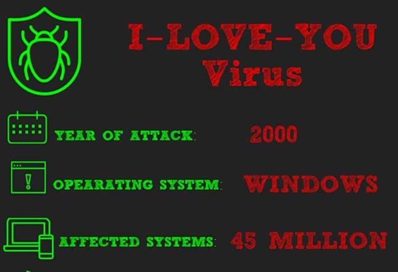

How it occurred? What is it?

- In the Philippines, a 24 year old man named Onel De Guzman released a virus.
- created by a young man who was going to use it as an experiment as a undergraduate thesis
- it is an email note that has "I LOVE YOU" in a subject line where it has an attachment
- has VBSript program that overwrites the following files: JPEG, MP3, VPOS, JS, JSE, CSS, WSH, SCT and HTA
- ILOVEYOU virus spread much faster than any other email worm
- not a lot of software security in 2000, which meant that there was a high probabillity of people getting the virus
- Resets the recipients's Internet Explorar start page, resets Window settings, and spreads through Internet Replay Chat
- The ILOVEYOU virus attacked 10 million of Window PCs